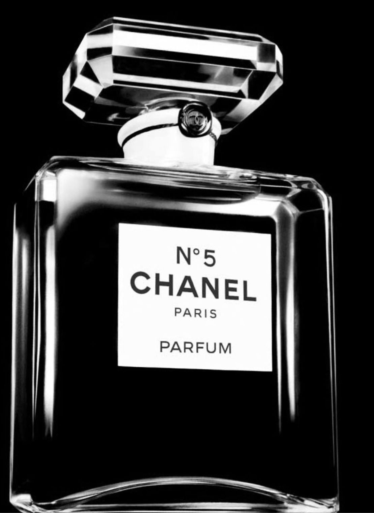

THE ANATOMY OF THE
55.55
The Iconic CHANEL N°5 Celebrates 100 Years With a Magnificent Work of Art

To honor 100 years of the luxury brand’s iconic CHANEL N°5 fragrance,
Patrice Leguéreau, director of the Fine Jewelry Creation Studio and
master jeweler, has imagined an exquisite and incomparable collection
of 123 pieces, the “Collection N°5.” As part of this assemblage, he
was inspired to create a singular necklace, a work of meticulous
craftsmanship and beauty that interprets the eternal mystery of the
legendary perfume.
In 1921, Gabrielle Chanel charged perfumer Ernest Beaux with
developing a modern fragrance to showcase the multifaceted nature of
femininity.
This boundary-breaking scent — which combined more than 80
ingredients, including synthetic aldehydes — was a huge departure
from the one-note floral concoctions popularized by society women of
the time. And its name? A tribute to Chanel’s favorite number: 5. As
fate would have it, her favored scent medley was Beaux’s fifth
sample. And the visionary couturier would extend her luck by
introducing the avant-garde fragrance, which ultimately became a
best-seller worldwide, on the fifth day of the fifth month of that
year. In 1932, Chanel once again shattered the codes of French High
Jewelry with her one and only collection in platinum and diamonds.
These “Bijoux de Diamants” introduced new ways of wearing adornments
and took jewelry into another realm.
“Gabrielle Chanel approached the universes of fragrances and
jewelry with the same visionary values, focusing on audacity and
the quest of excellence. I wanted to rediscover that creative
gesture with this collection.”
Stark and graphic, the spartan configuration of the CHANEL N°5
bottle is instantly recognizable.

The classic glass flacon features elegant, clean lines with a
monochromatic white label and chic black lettering. Leguéreau was
inspired by the perfume decanter’s beloved design and envisioned a
magnificent necklace that shared its silhouette.
To create a visual impact worthy of the fragrance’s
culture-defining legacy, Leguéreau had the idea for an impeccable,
Flawless Type IIa 55.55-carat center diamond.
“This is an unprecedented approach. We started with a rough
diamond that we had cut, not to make the biggest stone possible
but to obtain a perfect octagonal diamond weighing 55.55 carats.”
The gem’s weight is a calculated homage to the designer’s lucky
number and is inspired by the shape of the bottle’s stopper, a
design that reflects the famous Place Vendôme in Paris — also home
to the Ritz, where Chanel resided.
The revolutionary fragrance’s heady and alluring aroma encompasses
a highly complex blend of aldehydes, including an intricately
assembled mélange of delicious florals like ylang-ylang, May rose
and jasmine. They are layered over a warm, woody base of vanilla,
vetiver, amber, patchouli and sandalwood. To bring these elements
to life, the distinct bottle-shaped motif of the necklace features
tailor-cut diamonds of varying proportions. Each stone represents
a separate floral note of the eau’s unique bouquet. The striking
gems are complemented by a waterfall of pear-shaped diamonds that
evoke the liquid effect of perfume drops.
The most potent asset of the venerable scent is its sillage, the
floating essence a perfume leaves as its wearer moves across a
room. And just as CHANEL N°5 leaves an indelible impression that
has influenced our culture over the past 100 years, this
exquisitely curated necklace was designed to be a long-standing
and grand honor of the fragrance’s centennial. The eye-catching
gems of the 55.55 necklace diffuse light like a breezy, ethereal
aroma. Its sprays of scintillating stones summon thoughts of the
fragrance’s dazzling olfactory burst. Each jewel was hand-selected
to be reminiscent of the scent’s complexity, collectively giving
the statement piece unparalleled radiance.
The CHANEL 55.55 necklace is a truly breathtaking piece of artistry.
Crafted to celebrate Chanel and her legendary fragrance, the
unrivaled creation will be on display to the public. By joining the
CHANEL Patrimoine, this necklace, rather than being sold, will
forever bear witness to this chapter in the history of CHANEL Fine
Jewelry.
Experience the unparalleled beauty of Collection N°5.